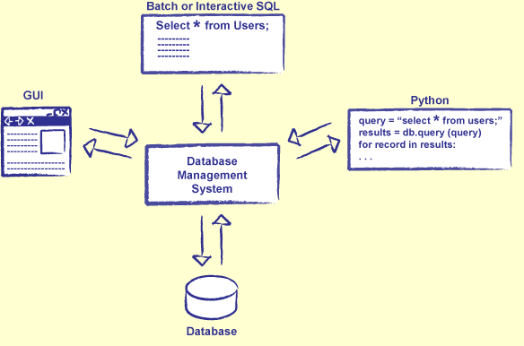
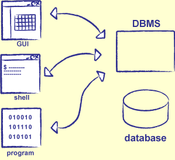

Every vendor implements its own extensions to the standard
Not case sensitive: gravity, Gravity and GRAVITY are considered the same
Three approaches:
Use an interactive GUI
Put commands in a file, and give it to the DBMS
E.g., sqlite experiments.db < find_names.sql
Have a program written in another language (such as Python or Java) send strings containing commands to the database manager

Figure 17.2: Interacting with a DBMS
7) Creating Tables
To create a table, specify its name, and the names and types of its columns
CREATE TABLE Person(
Login TEXT,
LastName TEXT,
FirstName TEXT
);
To erase a table, use DROP TABLE name
Remember: back up early, back up often...
To insert values into a table, specify the name of the tables, and the values to be inserted
Each INSERT creates a new row
Rows do not have to be unique
INSERT INTO Person VALUES("skol", "Kovalevskaya", "Sofia");
INSERT INTO Person VALUES("mlom", "Lomonosov", "Mikhail");
INSERT INTO Person VALUES("dmitri", "Mendeleev", "Dmitri");
INSERT INTO Person VALUES("ivan", "Pavlov", "Ivan");
8) Simple Queries
Suppose we want to get everyone's name and login ID
Write a query that specifies what we want, and where to find it
SELECT Person.FirstName, Person.LastName, Person.Login FROM Person;
A value (or set of values) in one table that identifies a record in another
For example, the values in the Login column in Involved identify records in the Person table
Can (and should) specify such constraints explicitly, so that the DBMS can enforce them
CREATE TABLE Person(
Login TEXT NOT NULL,
LastName TEXT NOT NULL,
FirstName TEXT NOT NULL,
PRIMARY KEY (Login)
);
CREATE TABLE Experiment(
ProjectId INTEGER NOT NULL,
ExperimentId INTEGER NOT NULL,
NumInvolved INTEGER NOT NULL,
ExperimentDate DATE,
Hours REAL NOT NULL
CONSTRAINT Experiment_Key PRIMARY KEY (ProjectId, ExperimentId)
);
14) Eliminating Duplicates
How to find out who has done experiments for each project?
SELECT Project.ProjectName, Involved.Login
FROM Project, Involved
WHERE Project.ProjectId = Involved.ProjectId;
Antigravity|mlom
Antigravity|mlom
Teleportation|dmitri
Teleportation|skol
Teleportation|ivan
Teleportation|mlom
Time Travel|skol
Time Travel|skol
Time Travel|ivan
User mlom appears twice for the Antigravity project because he did two experiments for it
Use the DISTINCT keyword to eliminate duplicates
SELECT DISTINCT Project.ProjectName, Involved.Login
FROM Project, Involved
WHERE Project.ProjectId = Involved.ProjectId;
Antigravity|mlom
Teleportation|dmitri
Teleportation|skol
Teleportation|ivan
Teleportation|mlom
Time Travel|skol
Time Travel|ivan
15) Aggregation
Often need to aggregate (combine) values from different rows
Sum, maximum, average, etc.
Example: how much time has Mikhail spent on antigravity experiments?
SELECT SUM(Experiment.Hours)
FROM Involved INNER JOIN Experiment
WHERE (Involved.Login = "mlom")
AND (Involved.ProjectId = 1214)
AND (Involved.ProjectId = Experiment.ProjectId)
AND (Involved.ExperimentId = Experiment.ExperimentId);
15.8
16) Grouping
It would be tedious to write a separate query to total each scientist's hours
SQL doesn't have loops
Although some vendors provide non-standardized equivalents
Use GROUP BY to apply aggregation function to specific subsets of rows
SELECT Involved.Login, SUM(Experiment.Hours)
FROM Involved INNER JOIN Experiment
WHERE (Involved.ProjectId = Experiment.ProjectId)
AND (Involved.ExperimentId = Experiment.ExperimentId)
GROUP BY Involved.Login;
dmitri|7
ivan|5.5
mlom|23.0
skol|4.5
Note: negative hours on time travel experiments really mess up budgeting...
17) Self Joins
How to find people who have done experiments for two (or more) projects?
First attempt: use AND
SELECT DISTINCT Person.Login
FROM Person INNER JOIN Involved
WHERE (ProjectId = 1214) AND (ProjectId = 1709);
Doesn't work because ProjectID cannot simultaneously be 1214 and 1709
Second attempt: use OR
SELECT DISTINCT Person.Login
FROM Person INNER JOIN Involved
WHERE (ProjectId = 1214) OR (ProjectId = 1709);
skol
mlom
dmitri
ivan
Doesn't work because it includes rows where information about different people has been joined
skol
mlom
dmitri
ivan
18) Using Self Joins
Right solution that works is to join the Involved table with itself, so that we have two project IDs in the same row
Then select rows where the person is the same, but the project IDs are different
Have to create a temporary alias for the two versions of the tables
SELECT DISTINCT A.Login
FROM Involved A CROSS JOIN Involved B
WHERE (A.Login = B.Login)
AND (A.ProjectId != B.ProjectId);
mlom
skol
ivan
19) Who Has Worked Together?
Which pairs of people have performed experiments together?
SELECT DISTINCT A.Login, B.Login
FROM Involved A CROSS JOIN Involved B
WHERE (A.ProjectId = B.ProjectId)
AND (A.ExperimentId = B.ExperimentId)
AND (A.Login != B.Login);
20) Null
Real-world data always has holes in it
Some people don't have cell phone numbers, some authors' birth dates are unknown...
Can represent this in a database using the special value NULL
NULL is not the same as zero, empty string, False, etc.
Instead, it means "nothing known at all"
Database designers argue about whether NULL is a good idea or not
Does it mean "no value", "value not known", or something else?
21) Operations on Nulls
Check to see if a value is null using IS NULL
The result of any computation involving NULL is NULL
2 + NULL is NULL, NULL OR True is NULL, etc.
Although in some databases, False AND NULL is False, and True OR NULL is True
22) Managing Nulls
By default, columns may contain NULL, but this can be prohibited when the table is created
Queries must take possibility of NULL into account
Experiment.ExperimentDate <> 1901-05-01 selects all experiments that weren't conducted on May 1, 1901, and all experiments whose date is NULL (since NULL isn't equal to anything except itself)
Have to use (Experiment.ExperimentDate <> 1901-05-01) AND (Experiment.ExperimentDate IS NOT NULL)
23) Database Design
Database design is a sizeable topic in its own right
Make sure the relationships are correct
Make sure the database performs well
Very dependent on exactly which vendor database is being used
But all commercial-grade DBMSes have powerful optimizers
Database manager runs the inner query first, then applies the outer query to the inner query's result
27) Nested Query Example
Strategy:
Nested query finds all the people we don't want
Outer query subtracts them from the set containing everyone
SELECT DISTINCT Login
FROM Involved
WHERE Login NOT IN
(SELECT DISTINCT Login
FROM Involved
WHERE Involved.ProjectId = 1737);
mlom
dmitri
28) More Uses for Nested Queries
This strategy is useful for many other things as well
Example: how many people have done experiments for exactly one project?
Solution: find the people who've done experiments for none, or for two or more, and subtract them from everyone
SELECT DISTINCT Login
FROM Involved
WHERE Login NOT IN
(SELECT DISTINCT A.Login
FROM Involved A INNER JOIN Involved B
WHERE (A.Login = B.Login)
AND (A.ProjectId != B.ProjectId));
dmitri
29) Using Other Languages
Usually don't write entire application in SQL, or run SQL in sub-shell
Instead, embed SQL in the programming language of your choice
Establish a connection between the program and the DBMS
Typically a socket, but other methods are used as well
Create a pointer into the database called a cursor
Send queries, and loop over results

Figure 17.5: Using Databases from Programs
30) Example: Database Access from Python
Example: get the names of all the scientists into a Python program
from pysqlite2 import dbapi2 as sqlite
connection = sqlite.connect("example.db")
cursor = connection.cursor()
cursor.execute("SELECT FirstName, LastName FROM Person ORDER BY LastName;")
results = cursor.fetchall();
for r in results:
print r
cursor.close();
connection.close();
Consistent: database is in a legal state when the transaction ends
Isolated: no operation outside the transaction sees the database in any intermediate state
Durable: once the user is notified that the operation has completed, its effects are permanent
33) Example: Changing User ID
Change Kovalevskaya's login ID from "skol" to "kovalev"
BEGIN TRANSACTION;
UPDATE Person
SET Login = "kovalev"
WHERE Login = "skol";
UPDATE Involved
SET Login = "kovalev"
WHERE Login = "skol";
END TRANSACTION;
SELECT *
FROM Person
WHERE (Login = "kovalev") OR (Login = "skol");
SELECT *
FROM Involved
WHERE (Login = "kovalev") OR (Login = "skol");